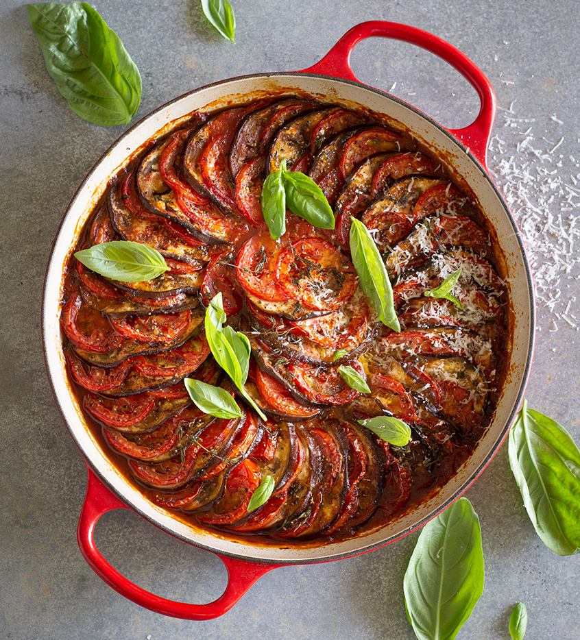

Return to the list of recipes
Ratatouille

Description:
La ratatouille est un recette d'été délicieuse, qui mettra du soleil dans vos assiettes !
Avec ses légumes, la ratatouille est idéale pour accompagner un barbecue ou des grillades.
Ingredients:
- 350 g d'aubergine
- 350 g de courgette
- 350 g de poivron rouge
- 350 g d'oignon
- 500 g de tomates bien mûres
- 3 gousses d'ail
- 6 cuillères à soupe d'huile d'olive
- 1 brin de thym
- 1 feuille de laurier
- poivre
- sel
Steps:
-
Coupez les tomates pelées en quartiers
-
Coupez les aubergines et les courgettes en rondelles
-
Emincez les poivrons en lamelles et l'oignon en rouelles
-
Chauffez 2 cuillères à soupe d'huile dans une poêle et faites-y fondre les oignons et les poivrons.
-
Lorsqu'ils sont tendres, ajoutez les tomates, l'ail haché, le thym et le laurier.
-
Salez, poivrez et laissez mijoter doucement à couvert durant 45 minutes.
-
Pendant ce temps, préparez les aubergines et les courgettes.
Faites les cuire séparément ou non dans l'huile d'olive pendant 15 minutes.
-
Vérifiez la cuisson des légumes pour qu'ils ne soient plus fermes.
Ajoutez les alors au mélange de tomates et prolongez la cuisson sur tout petit feu pendant 10 min.
-
Salez et poivrez si besoin.
Back to top